Next: 5 Infrastructure: Utilities Up: ESMC_crefdoc Previous: 3 Superstructure Contents
The ESMF infrastructure data classes are part of the framework's hierarchy of structures for handling Earth system model data and metadata on parallel platforms. The hierarchy is in complexity; the simplest data class in the infrastructure represents a distributed data array and the most complex data class represents a bundle of physical fields that are discretized on the same grid. However, the current C API does not support bundled data structures yet. Array and Field are the two data classes offered by the ESMF C language binding. Data class methods are called both from user-written code and from other classes internal to the framework.
Data classes are distributed over DEs, or Decomposition Elements. A DE represents a piece of a decomposition. A DELayout is a collection of DEs with some associated connectivity that describes a specific distribution. For example, the distribution of a grid divided into four segments in the x-dimension would be expressed in ESMF as a DELayout with four DEs lying along an x-axis. This abstract concept enables a data decomposition to be defined in terms of threads, MPI processes, virtual decomposition elements, or combinations of these without changes to user code. This is a primary strategy for ensuring optimal performance and portability for codes using the ESMF for communications.
ESMF data classes provide a standard, convenient way for developers to collect together information related to model or observational data. The information assembled in a data class includes a data pointer, a set of attributes (e.g. units, although attributes can also be user-defined), and a description of an associated grid. The same set of information within an ESMF data object can be used by the framework to arrange intercomponent data transfers, to perform I/O, for communications such as gathers and scatters, for simplification of interfaces within user code, for debugging, and for other functions. This unifies and organizes codes overall so that the user need not define different representations of metadata for the same field for I/O and for component coupling.
Since it is critical that users be able to introduce ESMF into their codes easily and incrementally, ESMF data classes can be created based on native Fortran pointers. Likewise, there are methods for retrieving native Fortran pointers from within ESMF data objects. This allows the user to perform allocations using ESMF, and to retrieve Fortran arrays later for optimized model calculations. The ESMF data classes do not have associated differential operators or other mathematical methods.
For flexibility, it is not necessary to build an ESMF data object all at once. For example, it's possible to create a field but to defer allocation of the associated field data until a later time.
|
Key Features |
| Hierarchy of data structures designed specifically for the Earth system domain and high performance, parallel computing. |
| Multi-use ESMF structures simplify user code overall. |
| Data objects support incremental construction and deferred allocation. |
| Native Fortran arrays can be associated with or retrieved from ESMF data objects, for ease of adoption, convenience, and performance. |
The main classes that are used for model and observational data manipulation are as follows:
Data elements in Arrays are partitioned into categories defined by the role the data element plays in distributed halo operations. Haloing - sometimes called ghosting - is the practice of copying portions of array data to multiple memory locations to ensure that data dependencies can be satisfied quickly when performing a calculation. ESMF Arrays contain an exclusive domain, which contains data elements updated exclusively and definitively by a given DE; a computational domain, which contains all data elements with values that are updated by the DE in computations; and a total domain, which includes both the computational domain and data elements from other DEs which may be read but are not updated in computations.
An ESMF Field represents a physical field, such as temperature. The motivation for including Fields in ESMF is that bundles of Fields are the entities that are normally exchanged when coupling Components.
The ESMF Field class contains distributed and discretized field data, a reference to its associated grid, and metadata. The Field class stores the grid staggering for that physical field. This is the relationship of how the data array of a field maps onto a grid (e.g. one item per cell located at the cell center, one item per cell located at the NW corner, one item per cell vertex, etc.). This means that different Fields which are on the same underlying ESMF Grid but have different staggerings can share the same Grid object without needing to replicate it multiple times.
Fields can be added to States for use in inter-Component data communications.
Field communication capabilities include: data redistribution, regridding, scatter, gather, sparse-matrix multiplication, and halo update. These are discussed in more detail in the documentation for the specific method calls. ESMF does not currently support vector fields, so the components of a vector field must be stored as separate Field objects.
DESCRIPTION:
Specify which interpolation method to use during regridding.
The type of this flag is:
type(ESMC_RegridMethod_Flag)
The valid values are:
A Field serves as an annotator of data, since it carries a description of the grid it is associated with and metadata such as name and units. Fields can be used in this capacity alone, as convenient, descriptive containers into which arrays can be placed and retrieved. However, for most codes the primary use of Fields is in the context of import and export States, which are the objects that carry coupling information between Components. Fields enable data to be self-describing, and a State holding ESMF Fields contains data in a standard format that can be queried and manipulated.
The sections below go into more detail about Field usage.
Fields can be created and destroyed at any time during application execution. However, these Field methods require some time to complete. We do not recommend that the user create or destroy Fields inside performance-critical computational loops.
All versions of the ESMC_FieldCreate() routines require a Mesh object as input. The Mesh contains the information needed to know which Decomposition Elements (DEs) are participating in the processing of this Field, and which subsets of the data are local to a particular DE.
The details of how the create process happens depend on which of the variants of the ESMC_FieldCreate() call is used.
When finished with an ESMC_Field, the ESMC_FieldDestroy method removes it. However, the objects inside the ESMC_Field created externally should be destroyed separately, since objects can be added to more than one ESMC_Field. For example, the same ESMF_Mesh can be referenced by multiple ESMC_Fields. In this case the internal Mesh is not deleted by the ESMC_FieldDestroy call.
INTERFACE:
ESMC_Field ESMC_FieldCreateGridArraySpec( ESMC_Grid grid, // in ESMC_ArraySpec arrayspec, // in enum ESMC_StaggerLoc staggerloc, // in ESMC_InterArrayInt *gridToFieldMap, // in ESMC_InterArrayInt *ungriddedLBound, // in ESMC_InterArrayInt *ungriddedUBound, // in const char *name, // in int *rc // out );RETURN VALUE:
Newly created ESMC_Field object.DESCRIPTION:
Creates a ESMC_Field object.
The arguments are:
INTERFACE:
ESMC_Field ESMC_FieldCreateGridTypeKind( ESMC_Grid grid, // in enum ESMC_TypeKind_Flag typekind, // in enum ESMC_StaggerLoc staggerloc, // in ESMC_InterArrayInt *gridToFieldMap, // in ESMC_InterArrayInt *ungriddedLBound, // in ESMC_InterArrayInt *ungriddedUBound, // in const char *name, // in int *rc // out );RETURN VALUE:
Newly created ESMC_Field object.DESCRIPTION:
Creates a ESMC_Field object.
The arguments are:
INTERFACE:
ESMC_Field ESMC_FieldCreateMeshArraySpec( ESMC_Mesh mesh, // in ESMC_ArraySpec arrayspec, // in ESMC_InterArrayInt *gridToFieldMap, // in ESMC_InterArrayInt *ungriddedLBound, // in ESMC_InterArrayInt *ungriddedUBound, // in const char *name, // in int *rc // out );RETURN VALUE:
Newly created ESMC_Field object.DESCRIPTION:
Creates a ESMC_Field object.
The arguments are:
INTERFACE:
ESMC_Field ESMC_FieldCreateMeshTypeKind( ESMC_Mesh mesh, // in enum ESMC_TypeKind_Flag typekind, // in enum ESMC_MeshLoc_Flag meshloc, // in ESMC_InterArrayInt *gridToFieldMap, // in ESMC_InterArrayInt *ungriddedLBound, // in ESMC_InterArrayInt *ungriddedUBound, // in const char *name, // in int *rc // out );RETURN VALUE:
Newly created ESMC_Field object.DESCRIPTION:
Creates a ESMC_Field object.
The arguments are:
INTERFACE:
ESMC_Field ESMC_FieldCreateLocStreamArraySpec( ESMC_LocStream locstream, // in ESMC_ArraySpec arrayspec, // in ESMC_InterArrayInt *gridToFieldMap, // in ESMC_InterArrayInt *ungriddedLBound, // in ESMC_InterArrayInt *ungriddedUBound, // in const char *name, // in int *rc // out );RETURN VALUE:
Newly created ESMC_Field object.DESCRIPTION:
Creates a ESMC_Field object.
The arguments are:
INTERFACE:
ESMC_Field ESMC_FieldCreateLocStreamTypeKind( ESMC_LocStream locstream, // in enum ESMC_TypeKind_Flag typekind, // in ESMC_InterArrayInt *gridToFieldMap, // in ESMC_InterArrayInt *ungriddedLBound, // in ESMC_InterArrayInt *ungriddedUBound, // in const char *name, // in int *rc // out );RETURN VALUE:
Newly created ESMC_Field object.DESCRIPTION:
Creates a ESMC_Field object.
The arguments are:
INTERFACE:
int ESMC_FieldDestroy( ESMC_Field *field // inout );RETURN VALUE:
Return code; equals ESMF_SUCCESS if there are no errors.DESCRIPTION:
Releases all resources associated with this ESMC_Field. Return code; equals ESMF_SUCCESS if there are no errors.
The arguments are:
INTERFACE:
ESMC_Array ESMC_FieldGetArray( ESMC_Field field, // in int *rc // out );RETURN VALUE:
The ESMC_Array object stored in the ESMC_Field.DESCRIPTION:
Get the internal Array stored in the ESMC_Field.
The arguments are:
INTERFACE:
ESMC_Mesh ESMC_FieldGetMesh( ESMC_Field field, // in int *rc // out );RETURN VALUE:
The ESMC_Mesh object stored in the ESMC_Field.DESCRIPTION:
Get the internal Mesh stored in the ESMC_Field.
The arguments are:
INTERFACE:
void *ESMC_FieldGetPtr( ESMC_Field field, // in int localDe, // in int *rc // out );RETURN VALUE:
The Fortran data pointer stored in the ESMC_Field.DESCRIPTION:
Get the internal Fortran data pointer stored in the ESMC_Field.
The arguments are:
INTERFACE:
int ESMC_FieldGetBounds( ESMC_Field field, // in int *localDe, int *exclusiveLBound, int *exclusiveUBound, int rank );RETURN VALUE:
Return code; equals ESMF_SUCCESS if there are no errors.DESCRIPTION:
Get the Field bounds from the ESMC_Field.
The arguments are:
INTERFACE:
int ESMC_FieldPrint( ESMC_Field field // in );RETURN VALUE:
Return code; equals ESMF_SUCCESS if there are no errors.DESCRIPTION:
Print the internal information within this ESMC_Field.
The arguments are:
conservative interpolation
INTERFACE:
int ESMC_FieldRegridGetArea( ESMC_Field field // in );RETURN VALUE:
Return code; equals ESMF_SUCCESS if there are no errors.DESCRIPTION:
This subroutine gets the area of the cells used for conservative interpolation for the grid object associated with areaField and puts them into areaField. If created on a 2D Grid, it must be built on the ESMF_STAGGERLOC_CENTER stagger location. If created on a 3D Grid, it must be built on the ESMF_STAGGERLOC_CENTER_VCENTER stagger location. If created on a Mesh, it must be built on the ESMF_MESHLOC_ELEMENT mesh location.
The arguments are:
INTERFACE:
int ESMC_FieldRegridStore(
ESMC_Field srcField, // in
ESMC_Field dstField, // in
ESMC_InterArrayInt *srcMaskValues, // in
ESMC_InterArrayInt *dstMaskValues, // in
ESMC_RouteHandle *routehandle, // inout
enum ESMC_RegridMethod_Flag *regridmethod, // in
enum ESMC_PoleMethod_Flag *polemethod, // in
int *regridPoleNPnts, // in
enum ESMC_LineType_Flag *lineType, // in
enum ESMC_NormType_Flag *normType, // in
enum ESMC_ExtrapMethod_Flag *extrapMethod, // in
int *extrapNumSrcPnts, // in
float *extrapDistExponent, // in
int *extrapNumLevels, // in
enum ESMC_UnmappedAction_Flag *unmappedaction, // in
enum ESMC_Logical *ignoreDegenerate, // in
double **factorList, // inout
int **factorIndexList, // inout
int *numFactors, // inout
ESMC_Field *srcFracField, // inout
ESMC_Field *dstFracField); // inout
RETURN VALUE:
Return code; equals ESMF_SUCCESS if there are no errors.DESCRIPTION:
Creates a sparse matrix operation (stored in routehandle) that contains the calculations and communications necessary to interpolate from srcField to dstField. The routehandle can then be used in the call ESMC_FieldRegrid() to interpolate between the Fields.
The arguments are:
INTERFACE:
int ESMC_FieldRegridStoreFile(
ESMC_Field srcField, // in
ESMC_Field dstField, // in
const char *filename, // in
ESMC_InterArrayInt *srcMaskValues, // in
ESMC_InterArrayInt *dstMaskValues, // in
ESMC_RouteHandle *routehandle, // inout
enum ESMC_RegridMethod_Flag *regridmethod, // in
enum ESMC_PoleMethod_Flag *polemethod, // in
int *regridPoleNPnts, // in
enum ESMC_LineType_Flag *lineType, // in
enum ESMC_NormType_Flag *normType, // in
enum ESMC_UnmappedAction_Flag *unmappedaction, // in
enum ESMC_Logical *ignoreDegenerate, // in
enum ESMC_Logical *create_rh, // in
enum ESMC_FileMode_Flag *filemode, // in
const char *srcFile, // in
const char *dstFile, // in
enum ESMC_FileFormat_Flag *srcFileType, // in
enum ESMC_FileFormat_Flag *dstFileType, // in
enum ESMC_Logical *largeFileFlag, // in
ESMC_Field *srcFracField, // out
ESMC_Field *dstFracField); // out
RETURN VALUE:
Return code; equals ESMF_SUCCESS if there are no errors.DESCRIPTION:
Creates a sparse matrix operation (stored in routehandle) that contains the calculations and communications necessary to interpolate from srcField to dstField. The routehandle can then be used in the call ESMC_FieldRegrid() to interpolate between the Fields. The weights will be output to the file with name filename.
The arguments are:
INTERFACE:
int ESMC_FieldRegrid(
ESMC_Field srcField, // in
ESMC_Field dstField, // inout
ESMC_RouteHandle routehandle, // in
enum ESMC_Region_Flag *zeroregion); // in
RETURN VALUE:
Return code; equals ESMF_SUCCESS if there are no errors.DESCRIPTION:
Execute the precomputed regrid operation stored in routehandle to interpolate from srcField to dstField. See ESMF_FieldRegridStore() on how to precompute the routehandle. It is erroneous to specify the identical Field object for srcField and dstField arguments. This call is collective across the current VM.
The arguments are:
INTERFACE:
int ESMC_FieldRegridRelease(ESMC_RouteHandle *routehandle); // inoutRETURN VALUE:
Return code; equals ESMF_SUCCESS if there are no errors.DESCRIPTION:
Free resources used by regrid object
The arguments are:
INTERFACE:
int ESMC_FieldSMMStore(
ESMC_Field srcField, // in
ESMC_Field dstField, // in
const char *filename, // in
ESMC_RouteHandle *routehandle, // out
enum ESMC_Logical *ignoreUnmatchedIndices, // in
int *srcTermProcessing, // in
int *pipeLineDepth); // in
RETURN VALUE:
Return code; equals ESMF_SUCCESS if there are no errors.DESCRIPTION:
Creates a sparse matrix operation (stored in routehandle) that contains the calculations and communications necessary to interpolate from srcField to dstField. The routehandle can then be used in the call ESMC_FieldRegrid() to interpolate between the Fields.
The arguments are:
![[*]](crossref.png) for an in-depth discussion of all
bit-for-bit reproducibility aspects related to route-based communication
methods.
The ESMC_FieldSMMStore() method implements an auto-tuning scheme
for the srcTermProcessing parameter. The intent on the
srcTermProcessing argument is "inout" in order to
support both overriding and accessing the auto-tuning parameter.
If an argument 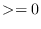 is specified, it is used for the
srcTermProcessing parameter, and the auto-tuning phase is skipped.
In this case the srcTermProcessing argument is not modified on
return. If the provided argument is 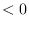, the srcTermProcessing
parameter is determined internally using the auto-tuning scheme. In this
case the srcTermProcessing argument is re-set to the internally
determined value on return. Auto-tuning is also used if the optional
srcTermProcessing argument is omitted.
for an in-depth discussion of all
bit-for-bit reproducibility aspects related to route-based communication
methods.
The ESMC_FieldSMMStore() method implements an auto-tuning scheme
for the srcTermProcessing parameter. The intent on the
srcTermProcessing argument is "inout" in order to
support both overriding and accessing the auto-tuning parameter.
If an argument 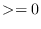 is specified, it is used for the
srcTermProcessing parameter, and the auto-tuning phase is skipped.
In this case the srcTermProcessing argument is not modified on
return. If the provided argument is 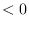, the srcTermProcessing
parameter is determined internally using the auto-tuning scheme. In this
case the srcTermProcessing argument is re-set to the internally
determined value on return. Auto-tuning is also used if the optional
srcTermProcessing argument is omitted.
The Array class is an alternative to the Field class for representing distributed, structured data. Unlike Fields, which are built to carry grid coordinate information, Arrays can only carry information about the indices associated with grid cells. Since they do not have coordinate information, Arrays cannot be used to calculate interpolation weights. However, if the user can supply interpolation weights, the Array sparse matrix multiply operation can be used to apply the weights and transfer data to the new grid. Arrays can also perform redistribution, scatter, and gather communication operations.
Like Fields, Arrays can be added to a State and used in inter-Component data communications.
From a technical standpoint, the ESMF Array class is an index space based, distributed data storage class. It provides DE-local memory allocations within DE-centric index regions and defines the relationship to the index space described by the ESMF DistGrid. The Array class offers common communication patterns within the index space formalism.
INTERFACE:
ESMC_Array ESMC_ArrayCreate( ESMC_ArraySpec arrayspec, // in ESMC_DistGrid distgrid, // in const char* name, // in int *rc // out );RETURN VALUE:
Newly created ESMC_Array object.DESCRIPTION:
Create an ESMC_Array object.
The arguments are:
INTERFACE:
int ESMC_ArrayDestroy( ESMC_Array *array // inout );RETURN VALUE:
Return code; equals ESMF_SUCCESS if there are no errors.DESCRIPTION:
Destroy an ESMC_Array object.
The arguments are:
INTERFACE:
const char *ESMC_ArrayGetName( ESMC_Array array, // in int *rc // out );RETURN VALUE:
Pointer to the Array name string.DESCRIPTION:
Get the name of the specified ESMC_Array object.
The arguments are:
INTERFACE:
void *ESMC_ArrayGetPtr( ESMC_Array array, // in int localDe, // in int *rc // out );RETURN VALUE:
Pointer to the Array data.DESCRIPTION:
Get pointer to the data of the specified ESMC_Array object.
The arguments are:
INTERFACE:
int ESMC_ArrayPrint( ESMC_Array array // in );RETURN VALUE:
Return code; equals ESMF_SUCCESS if there are no errors.DESCRIPTION:
Print internal information of the specified ESMC_Array object.
The arguments are:
An ArraySpec is a very simple class that contains type, kind, and rank information about an Array. This information is stored in two parameters. TypeKind describes the data type of the elements in the Array and their precision. Rank is the number of dimensions in the Array.
The only methods that are associated with the ArraySpec class are those that allow you to set and retrieve this information.
INTERFACE:
int ESMC_ArraySpecGet( ESMC_ArraySpec arrayspec, // in int *rank, // out enum ESMC_TypeKind_Flag *typekind // out );RETURN VALUE:
Return code; equals ESMF_SUCCESS if there are no errors.DESCRIPTION:
Returns information about the contents of an ESMC_ArraySpec.
The arguments are:
INTERFACE:
int ESMC_ArraySpecSet( ESMC_ArraySpec *arrayspec, // inout int rank, // in enum ESMC_TypeKind_Flag typekind // in );RETURN VALUE:
Return code; equals ESMF_SUCCESS if there are no errors.DESCRIPTION:
Set an Array specification - typekind, and rank.
The arguments are:
The ESMF Grid class is used to describe the geometry and discretization of logically rectangular physical grids. It also contains the description of the grid's underlying topology and the decomposition of the physical grid across the available computational resources. The most frequent use of the Grid class is to describe physical grids in user code so that sufficient information is available to perform ESMF methods such as regridding.
|
Key Features |
| Representation of grids formed by logically rectangular regions, including uniform and rectilinear grids (e.g. lat-lon grids), curvilinear grids (e.g. displaced pole grids), and grids formed by connected logically rectangular regions (e.g. cubed sphere grids). |
| Support for 1D, 2D, 3D, and higher dimension grids. |
| Distribution of grids across computational resources for parallel operations - users set which grid dimensions are distributed. |
| Grids can be created already distributed, so that no single resource needs global information during the creation process. |
| Options to define periodicity and other edge connectivities either explicitly or implicitly via shape shortcuts. |
| Options for users to define grid coordinates themselves or call prefabricated coordinate generation routines for standard grids [NO GENERATION ROUTINES YET]. |
| Options for incremental construction of grids. |
| Options for using a set of pre-defined stagger locations or for setting custom stagger locations. |
ESMF Grids are based on the concepts described in A Standard Description of Grids Used in Earth System Models [Balaji 2006]. In this document Balaji introduces the mosaic concept as a means of describing a wide variety of Earth system model grids. A mosaic is composed of grid tiles connected at their edges. Mosaic grids includes simple, single tile grids as a special case.
The ESMF Grid class is a representation of a mosaic grid. Each ESMF Grid is constructed of one or more logically rectangular Tiles. A Tile will usually have some physical significance (e.g. the region of the world covered by one face of a cubed sphere grid).
The piece of a Tile that resides on one DE (for simple cases, a DE can be thought of as a processor - see section on the DELayout) is called a LocalTile. For example, the six faces of a cubed sphere grid are each Tiles, and each Tile can be divided into many LocalTiles.
Every ESMF Grid contains a DistGrid object, which defines the Grid's index space, topology, distribution, and connectivities. It enables the user to define the complex edge relationships of tripole and other grids. The DistGrid can be created explicitly and passed into a Grid creation routine, or it can be created implicitly if the user takes a Grid creation shortcut. The DistGrid used in Grid creation describes the properties of the Grid cells. In addition to this one, the Grid internally creates DistGrids for each stagger location. These stagger DistGrids are related to the original DistGrid, but may contain extra padding to represent the extent of the index space of the stagger. These DistGrids are what are used when a Field is created on a Grid.
The range of supported grids in ESMF can be defined by:
The first set of these are a group of overloaded calls broken up by the number of periodic dimensions they specify. With these the user can pick the method which creates a Grid with the number of periodic dimensions they need, and then specify other connectivity options via arguments to the method. The following is a description of these methods:
More detailed information can be found in the API description of each.
The second set of shortcut methods is a set of methods overloaded under the name ESMF_GridCreate(). These methods allow the user to specify the connectivites at the end of each dimension, by using the ESMF_GridConn_Flag flag. The table below shows the ESMF_GridConn_Flag settings used to create standard shapes in 2D using the ESMF_GridCreate() call. Two values are specified for each dimension, one for the low end and one for the high end of the dimension's index values.
| 2D Shape | connflagDim1(1) | connflagDim1(2) | connflagDim2(1) | connflagDim2(2) |
| Rectangle | NONE | NONE | NONE | NONE |
| Bipole Sphere | POLE | POLE | PERIODIC | PERIODIC |
| Tripole Sphere | POLE | BIPOLE | PERIODIC | PERIODIC |
| Cylinder | NONE | NONE | PERIODIC | PERIODIC |
| Torus | PERIODIC | PERIODIC | PERIODIC | PERIODIC |
If the user's grid shape is too complex for an ESMF shortcut routine, or involves more than three dimensions, a DistGrid can be created to specify the shape in detail. This DistGrid is then passed into a Grid create call.
ESMF Grids have several options for data distribution (also referred to as decomposition). As ESMF Grids are cell based, these options are all specified in terms of how the cells in the Grid are broken up between DEs.
The main distribution options are regular, irregular, and arbitrary. A regular distribution is one in which the same number of contiguous grid cells are assigned to each DE in the distributed dimension. An irregular distribution is one in which unequal numbers of contiguous grid cells are assigned to each DE in the distributed dimension. An arbitrary distribution is one in which any grid cell can be assigned to any DE. Any of these distribution options can be applied to any of the grid shapes (i.e., rectangle) or types (i.e., rectilinear). Support for arbitrary distribution is limited in the current version of ESMF.
Figure 7 illustrates options for distribution.
| 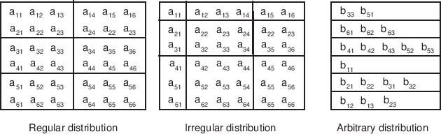 |
A distribution can also be specified using the DistGrid, by passing object into a Grid create call.
| 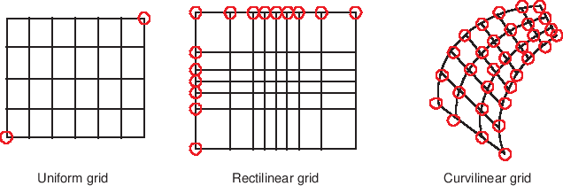 |
Each of these coordinate types can be set for each of the standard grid shapes described in section 19.1.3.
The table below shows how examples of common single Tile grids fall into this shape and coordinate taxonomy. Note that any of the grids in the table can have a regular or arbitrary distribution.
| Uniform | Rectilinear | Curvilinear | |
| Sphere | Global uniform lat-lon grid | Gaussian grid | Displaced pole grid |
| Rectangle | Regional uniform lat-lon grid | Gaussian grid section | Polar stereographic grid section |
There are two ways of specifying coordinates in ESMF. The first way is for the user to set the coordinates. The second way is to take a shortcut and have the framework generate the coordinates.
No ESMF generation routines are currently available.
Staggering is a finite difference technique in which the values of different physical quantities are placed at different locations within a grid cell.
The ESMF Grid class supports a variety of stagger locations, including cell centers, corners, and edge centers. The default stagger location in ESMF is the cell center, and cell counts in Grid are based on this assumption. Combinations of the 2D ESMF stagger locations are sufficient to specify any of the Arakawa staggers. ESMF also supports staggering in 3D and higher dimensions. There are shortcuts for standard staggers, and interfaces through which users can create custom staggers.
As a default the ESMF Grid class provides symmetric staggering, so that cell centers are enclosed by cell perimeter (e.g. corner) stagger locations. This means the coordinate arrays for stagger locations other than the center will have an additional element of padding in order to enclose the cell center locations. However, to achieve other types of staggering, the user may alter or eliminate this padding by using the appropriate options when adding coordinates to a Grid.
Masking is the process whereby parts of a grid can be marked to be ignored during an operation, such as regridding. Masking can be used on a source grid to indicate that certain portions of the grid should not be used to generate regridded data. This is useful, for example, if a portion of the source grid contains unusable values. Masking can also be used on a destination grid to indicate that the portion of the field built on that part of the Grid should not receive regridded data. This is useful, for example, when part of the grid isn't being used (e.g. the land portion of an ocean grid).
ESMF regrid currently supports masking for Fields built on structured Grids and element masking for Fields built on unstructured Meshes. The user may mask out points in the source Field or destination Field or both. To do masking the user sets mask information in the Grid or Mesh upon which the Fields passed into the ESMC_FieldRegridStore() call are built. The srcMaskValues and dstMaskValues arguments to that call can then be used to specify which values in that mask information indicate that a location should be masked out. For example, if dstMaskValues is set to (/1,2/), then any location that has a value of 1 or 2 in the mask information of the Grid or Mesh upon which the destination Field is built will be masked out.
Masking behavior differs slightly between regridding methods. For non-conservative regridding methods (e.g. bilinear or high-order patch), masking is done on points. For these methods, masking a destination point means that that point won't participate in regridding (e.g. won't be interpolated to). For these methods, masking a source point means that the entire source cell using that point is masked out. In other words, if any corner point making up a source cell is masked then the cell is masked. For conservative regridding methods (e.g. first-order conservative) masking is done on cells. Masking a destination cell means that the cell won't participate in regridding (e.g. won't be interpolated to). Similarly, masking a source cell means that the cell won't participate in regridding (e.g. won't be interpolated from). For any type of interpolation method (conservative or non-conservative) the masking is set on the location upon which the Fields passed into the regridding call are built. For example, if Fields built on ESMC_STAGGERLOC_CENTER are passed into the ESMC_FieldRegridStore() call then the masking should also be set on ESMC_STAGGERLOC_CENTER.
DESCRIPTION:
A set of values which indicates in which system the coordinates in the Grid are. This value is useful both to indicate to
other users the type of the coordinates, but also to control how the coordinates are interpreted in regridding methods
(e.g. ESMC_FieldRegridStore()).
The type of this flag is:
type(ESMC_CoordSys_Flag)
The valid values are:
DESCRIPTION:
The ESMC Grid can contain other kinds of data besides coordinates.
This data is referred to as Grid “items”. Some items may be used
by ESMC for calculations involving the Grid. The following
are the valid values of ESMC_GridItem_Flag.
The type of this flag is:
type(ESMC_GridItem_Flag)
The valid values are:
| Item Label | Type Restriction | Type Default | ESMC Uses | Controls |
| ESMC_GRIDITEM_MASK | ESMC_TYPEKIND_I4 | ESMC_TYPEKIND_I4 | YES | Masking in Regrid |
| ESMC_GRIDITEM_AREA | NONE | ESMC_TYPEKIND_R8 | YES | Conservation in Regrid |
DESCRIPTION:
The ESMC Grid class can exist in two states. These states are
present so that the library code can detect if a Grid has been
appropriately setup for the task at hand. The following
are the valid values of ESMC_GRIDSTATUS.
The type of this flag is:
type(ESMC_GridStatus_Flag)
The valid values are:
DESCRIPTION:
This type describes the type of connection that occurs at the pole when a Grid is
created with ESMC_GridCreate1PeriodicDim().
The type of this flag is:
type(ESMC_PoleKind_Flag)
The valid values are:
DESCRIPTION:
In the ESMC Grid class, data can be located at different positions in a
Grid cell. When setting or retrieving coordinate data the stagger location is
specified to tell the Grid method from where in the cell to get the data.
Although the user may define their own custom stagger locations,
ESMC provides a set of predefined locations for ease of use. The
following are the valid predefined stagger locations.
The 2D predefined stagger locations (illustrated in figure 9) are:
The 3D predefined stagger locations (illustrated in figure 10) are:
DESCRIPTION:
This option is used by ESMC_GridCreateFromFile to specify the type of the input grid file.
The type of this flag is:
type(ESMC_FileFormat_Flag)
The valid values are:
The ESMF_Grid class depends upon the ESMF_DistGrid class for the specification of its topology. That is, when creating a Grid, first an ESMF_DistGrid is created to describe the appropriate index space topology. This decision was made because it seemed redundant to have a system for doing this in both classes. It also seems most appropriate for the machinary for topology creation to be located at the lowest level possible so that it can be used by other classes (e.g. the ESMF_Array class). Because of this, however, the authors recommend that as a natural part of the implementation of subroutines to generate standard grid shapes (e.g. ESMF_GridGenSphere) a set of standard topology generation subroutines be implemented (e.g. ESMF_DistGridGenSphere) for users who want to create a standard topology, but a custom geometry.
INTERFACE:
ESMC_Grid ESMC_GridCreateNoPeriDim( ESMC_InterArrayInt *maxIndex, // in enum ESMC_CoordSys_Flag *coordSys, // in enum ESMC_TypeKind_Flag *coordTypeKind, // in enum ESMC_IndexFlag *indexflag, // in int *rc // out );RETURN VALUE:
type(ESMC_Grid)DESCRIPTION:
This call creates an ESMC_Grid with no periodic dimensions.
The arguments are:
INTERFACE:
ESMC_Grid ESMC_GridCreate1PeriDim( ESMC_InterArrayInt *maxIndex, // in ESMC_InterArrayInt *polekindflag, // in int *periodicDim, // in int *poleDim, // in enum ESMC_CoordSys_Flag *coordSys, // in enum ESMC_TypeKind_Flag *coordTypeKind, // in enum ESMC_IndexFlag *indexflag, // in int *rc // out );RETURN VALUE:
type(ESMC_Grid)DESCRIPTION:
This call creates an ESMC_Grid with 1 periodic dimension.
The arguments are:
INTERFACE:
ESMC_Grid ESMC_GridCreateCubedSphere( int *tilesize, // in ESMC_InterArrayInt *regDecompPTile, // in //ESMC_InterArrayInt *decompFlagPTile, // in //ESMC_InterArrayInt *deLabelList, // in //ESMC_DELayout *delayout, // in ESMC_InterArrayInt *staggerLocList, // in const char *name, // in int *rc); // outRETURN VALUE:
type(ESMC_Grid)DESCRIPTION:
Create a six-tile ESMC_Grid for a cubed sphere grid using regular decomposition. Each tile can have different decomposition. The grid coordinates are generated based on the algorithm used by GEOS-5. The tile resolution is defined by tileSize.
The arguments are:
INTERFACE:
ESMC_Grid ESMC_GridCreateFromFile(const char *filename, int fileTypeFlag,
int *regDecomp, int *decompflag,
int *isSphere, ESMC_InterArrayInt *polekindflag,
int *addCornerStagger,
int *addUserArea, enum ESMC_IndexFlag *indexflag,
int *addMask, const char *varname,
const char **coordNames, int *rc);
RETURN VALUE:
type(ESMC_Grid)DESCRIPTION:
This function creates a ESMC_Grid object from the specification in a NetCDF file.
The arguments are:
INTERFACE:
int ESMC_GridDestroy( ESMC_Grid *grid // in );RETURN VALUE:
Return code; equals ESMF_SUCCESS if there are no errors.DESCRIPTION:
Destroy the Grid.
The arguments are:
INTERFACE:
int ESMC_GridAddItem( ESMC_Grid grid, // in enum ESMC_GridItem_Flag itemflag, // in enum ESMC_StaggerLoc staggerloc // in );RETURN VALUE:
Return code; equals ESMF_SUCCESS if there are no errors.DESCRIPTION:
Add an item (e.g. a mask) to the Grid.
The arguments are:
INTERFACE:
void * ESMC_GridGetItem( ESMC_Grid grid, // in enum ESMC_GridItem_Flag itemflag, // in enum ESMC_StaggerLoc staggerloc, // in int *localDE, // in int *rc // out );RETURN VALUE:
A pointer to the item data.DESCRIPTION:
Get a pointer to item data (e.g. mask data) in the Grid.
The arguments are:
INTERFACE:
int ESMC_GridAddCoord( ESMC_Grid grid, // in enum ESMC_StaggerLoc staggerloc // in );RETURN VALUE:
Return code; equals ESMF_SUCCESS if there are no errors.DESCRIPTION:
Add coordinates to the Grid.
The arguments are:
INTERFACE:
void * ESMC_GridGetCoord( ESMC_Grid grid, // in int coordDim, // in enum ESMC_StaggerLoc staggerloc, // in int *localDE, int *exclusiveLBound, // out int *exclusiveUBound, // out int *rc // out );RETURN VALUE:
A pointer to coordinate data in the Grid.DESCRIPTION:
Get a pointer to coordinate data in the Grid.
The arguments are:
INTERFACE:
int ESMC_GridGetCoordBounds( ESMC_Grid grid, // in enum ESMC_StaggerLoc staggerloc, // in int *localDE, // in int *exclusiveLBound, // out int *exclusiveUBound, // out int *rc // out );RETURN VALUE:
Return code; equals ESMF_SUCCESS if there are no errors.DESCRIPTION:
Get coordinates bounds from the Grid.
The arguments are:
Unstructured grids are commonly used in the computational solution of Partial Differential equations. These are especially useful for problems that involve complex geometry, where using the less flexible structured grids can result in grid representation of regions where no computation is needed. Finite element and finite volume methods map naturally to unstructured grids and are used commonly in hydrology, ocean modeling, and many other applications.
In order to provide support for application codes using unstructured grids, the ESMF library provides a class for representing unstructured grids called the Mesh. Fields can be created on a Mesh to hold data. In Fortran, Fields created on a Mesh can also be used as either the source or destination or both of an interpolation (i.e. an ESMF_FieldRegridStore() call). This capability is currently not supported with the C interface, however, if the C Field is passed via a State to a component written in Fortran then the regridding can be performed there. The rest of this section describes the Mesh class and how to create and use them in ESMF.
A Mesh in ESMF is described in terms of nodes and elements. A node is a point in space which represents where the coordinate information in a Mesh is located. An element is a higher dimensional shape constructed of nodes. Elements give a Mesh its shape and define the relationship of the nodes to one another. Field data may be located on a Mesh's nodes.
The range of Meshes supported by ESMF are defined by several factors: dimension, element types, and distribution.
ESMF currently only supports Meshes whose number of coordinate dimensions (spatial dimension) is 2 or 3. The dimension of the elements in a Mesh (parametric dimension) must be less than or equal to the spatial dimension, but also must be either 2 or 3. This means that an ESMF mesh may be either 2D elements in 2D space, 3D elements in 3D space, or a manifold constructed of 2D elements embedded in 3D space.
ESMF currently supports two types of elements for each Mesh parametric dimension. For a parametric dimension of 2 the supported element types are triangles or quadrilaterals. For a parametric dimension of 3 the supported element types are tetrahedrons and hexahedrons. See Section 20.2.1 for diagrams of these. The Mesh supports any combination of element types within a particular dimension, but types from different dimensions may not be mixed, for example, a Mesh cannot be constructed of both quadrilaterals and tetrahedra.
ESMF currently only supports distributions where every node on a PET must be a part of an element on that PET. In other words, there must not be nodes without an element on a PET.
DESCRIPTION:
An ESMF Mesh can be constructed from a combination of different elements. The type of elements that can
be used in a Mesh depends on the Mesh's parametric dimension, which is set during Mesh creation. The
following are the valid Mesh element types for each valid Mesh parametric dimension (2D or 3D) .
3 4 ---------- 3
/ \ | |
/ \ | |
/ \ | |
/ \ | |
/ \ | |
1 --------- 2 1 ---------- 2
ESMC_MESHELEMTYPE_TRI ESMC_MESHELEMTYPE_QUAD
2D element types (numbers are the order for elementConn during
Mesh create)
For a Mesh with parametric dimension of 2 the valid element types (illustrated above) are:
| Element Type | Number of Nodes | Description |
| ESMC_MESHELEMTYPE_TRI | 3 | A triangle |
| ESMC_MESHELEMTYPE_QUAD | 4 | A quadrilateral (e.g. a rectangle) |
3 8---------------7
/|\ /| /|
/ | \ / | / |
/ | \ / | / |
/ | \ / | / |
/ | \ 5---------------6 |
4-----|-----2 | | | |
\ | / | 4----------|----3
\ | / | / | /
\ | / | / | /
\ | / | / | /
\|/ |/ |/
1 1---------------2
ESMC_MESHELEMTYPE_TETRA ESMC_MESHELEMTYPE_HEX
3D element types (numbers are the order for elementConn during
Mesh create)
For a Mesh with parametric dimension of 3 the valid element types (illustrated above) are:
| Element Type | Number of Nodes | Description |
| ESMC_MESHELEMTYPE_TETRA | 4 | A tetrahedron (CAN'T BE USED IN REGRID) |
| ESMC_MESHELEMTYPE_HEX | 8 | A hexahedron (e.g. a cube) |
DESCRIPTION:
This option is used by ESMF_MeshCreate to specify the type of the input grid file.
The type of this flag is:
type(ESMF_FileFormat_Flag)
The valid values are:
INTERFACE:
void ESMC_MeshGetMOAB( bool *moabOn, int *rc );RETURN VALUE:
NoneDESCRIPTION:
This call will query whether or not the MOAB mesh backend is enabled.
The arguments are:
INTERFACE:
void ESMC_MeshSetMOAB( bool moabOn, int *rc );RETURN VALUE:
NoneDESCRIPTION:
This call will toggle the MOAB mesh backend.
The arguments are:
INTERFACE:
int ESMC_MeshAddElements( ESMC_Mesh mesh, // inout int elementCount, // in int *elementIds, // in int *elementTypes, // in int *elementConn, // in int *elementMask, // in double *elementArea, // in double *elementCoords // in );RETURN VALUE:
Return code; equals ESMF_SUCCESS if there are no errors.DESCRIPTION:
This call is the third and last part of the three part mesh create sequence and should be called after the mesh is created with ESMF_MeshCreate() (20.3.5) and after the nodes are added with ESMF_MeshAddNodes() (20.3.4). This call adds the elements to the mesh and finalizes the create. After this call the Mesh is usable, for example a Field may be built on the created Mesh object and this Field may be used in a ESMF_FieldRegridStore() call.
The parameters to this call elementIds, elementTypes, and
elementConn describe the elements to be created. The description
for a particular element lies at the same index location in elementIds
and elementTypes. Each entry in elementConn consists of the list of
nodes used to create that element, so the connections for element  in the
elementIds array will start at
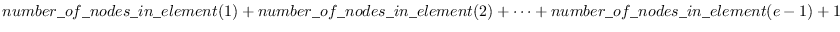 in elementConn.
in the
elementIds array will start at
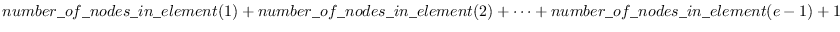 in elementConn.
INTERFACE:
int ESMC_MeshAddNodes( ESMC_Mesh mesh, // inout int nodeCount, // in int *nodeIds, // in double *nodeCoords, // in int *nodeOwners // in );RETURN VALUE:
Return code; equals ESMF_SUCCESS if there are no errors.DESCRIPTION:
This call is the second part of the three part mesh create sequence and should be called after the mesh's dimensions are set using ESMC_MeshCreate(). This call adds the nodes to the mesh. The next step is to call ESMC_MeshAddElements() (20.3.5).
The parameters to this call nodeIds, nodeCoords, and
nodeOwners describe the nodes to be created on this PET.
The description for a particular node lies at the same index location in
nodeIds and nodeOwners. Each entry
in nodeCoords consists of spatial dimension coordinates, so the coordinates
for node  in the nodeIds array will start at
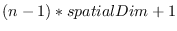.
in the nodeIds array will start at
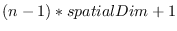.
INTERFACE:
ESMC_Mesh ESMC_MeshCreate( int parametricDim, // in int spatialDim, // in enum ESMC_CoordSys_Flag *coordSys, // in int *rc // out );RETURN VALUE:
type(ESMC_Mesh) :: ESMC_MeshCreateDESCRIPTION:
This call is the first part of the three part mesh create sequence. This call sets the dimension of the elements in the mesh (parametricDim) and the number of coordinate dimensions in the mesh (spatialDim). The next step is to call ESMC_MeshAddNodes() (20.3.4) to add the nodes and then ESMC_MeshAddElements() (20.3.3) to add the elements and finalize the mesh.
The arguments are:
INTERFACE:
ESMC_Mesh ESMC_MeshCreateFromFile(
const char *filename, // in (required)
int fileTypeFlag, // in (required)
int *convertToDual, // in (optional)
int *addUserArea, // in (optional)
const char *meshname, // in (optional)
int *maskFlag, // in (optional)
const char *varname, // in (optional)
int *rc // out
);
RETURN VALUE:
type(ESMC_Mesh) :: ESMC_MeshCreateFromFileDESCRIPTION:
Method to create a Mesh object from a NetCDF file in either SCRIP, UGRID, or ESMF file formats.
The required arguments are:
INTERFACE:
void ESMC_MeshGetCoord(
ESMC_Mesh mesh_in, // in (required)
double *nodeCoord, // out
int *num_nodes, // out
int *num_dims, // out
int *rc // out
);
RETURN VALUE:
NoneDESCRIPTION:
This call returns the node coordinates of the given ESMC_Mesh
in the provided nodeCoord buffer of doubles. At completion, this
buffer is a 1-D array with the coordinates for a given node
in adjacent indices. For example, for  -dimensional coordinates, the first
-dimensional coordinates, the first
 values in the returned array are the coordinates for the first node,
the second
values in the returned array are the coordinates for the first node,
the second  values are the coordinates for the second node, etc.
values are the coordinates for the second node, etc.
The arguments are:
INTERFACE:
void ESMC_MeshGetElemCoord(
ESMC_Mesh mesh_in, // in (required)
double *elemCoord, // out
int *num_elems, // out
int *num_dims, // out
int *rc // out
);
RETURN VALUE:
NoneDESCRIPTION:
This call returns the element coordinates of the given ESMC_Mesh
in the provided elemCoord buffer of doubles. At completion, this
buffer is a 1-D array with the coordinates for a given element
in adjacent indices. For example, for  -dimensional coordinates, the first
-dimensional coordinates, the first
 values in the returned array are the coordinates for the first element,
the second
values in the returned array are the coordinates for the first element,
the second  values are the coordinates for the second element, etc.
values are the coordinates for the second element, etc.
The arguments are:
INTERFACE:
void ESMC_MeshGetConnectivity(
ESMC_Mesh mesh_in, // in (required)
double *connCoord, // out
int *nodesPerElem, // out
int *rc // out
);
RETURN VALUE:
NoneDESCRIPTION:
NOTE: At this time the connectivity that is returned from this call is not necessarily in the same format as how it was passed into the creation routine.
This call returns the connectivity of the given ESMC_Mesh in the provided connCoord buffer of doubles. At completion, this buffer is a 1-D array with the coordinates for the nodes of a given element in counterclockwise order. The /tt nodesPerElem buffer of integers contains the number of nodes to expect per element.
The arguments are:
INTERFACE:
int ESMC_MeshDestroy( ESMC_Mesh *mesh // in );RETURN VALUE:
Return code; equals ESMF_SUCCESS if there are no errors.DESCRIPTION:
Destroy the Mesh. This call removes all internal memory associated with mesh. After this call mesh will no longer be usable.
The arguments are:
INTERFACE:
int ESMC_MeshFreeMemory( ESMC_Mesh mesh // in );RETURN VALUE:
Return code; equals ESMF_SUCCESS if there are no errors.DESCRIPTION:
This call removes the portions of mesh which contain connection and coordinate information. After this call, Fields build on mesh will no longer be usable as part of an ESMF_FieldRegridStore() operation. However, after this call Fields built on mesh can still be used in an ESMF_FieldRegrid() operation if the routehandle was generated beforehand. New Fields may also be built on mesh after this call.
The arguments are:
INTERFACE:
int ESMC_MeshGetElementCount( ESMC_Mesh mesh, // in int *elementCount // out );RETURN VALUE:
Return code; equals ESMF_SUCCESS if there are no errors.DESCRIPTION:
Query the number of elements in a mesh on the local PET. The arguments are:
INTERFACE:
int ESMC_MeshGetNodeCount( ESMC_Mesh mesh, // in int *nodeCount // out );RETURN VALUE:
Return code; equals ESMF_SUCCESS if there are no errors.DESCRIPTION:
Query the number of nodes in a mesh on the local PET. The arguments are:
INTERFACE:
int ESMC_MeshGetOwnedElementCount( ESMC_Mesh mesh, // in int *elementCount // out );RETURN VALUE:
Return code; equals ESMF_SUCCESS if there are no errors.DESCRIPTION:
Query the number of elements in a mesh owned by the local PET. This number will be equal or less than the local element count. The arguments are:
INTERFACE:
int ESMC_MeshGetOwnedNodeCount( ESMC_Mesh mesh, // in int *nodeCount // out );RETURN VALUE:
Return code; equals ESMF_SUCCESS if there are no errors.DESCRIPTION:
Query the number of nodes in a mesh owned by the local PET. This number will be equal or less than the local node count. The arguments are:
An exchange grid represents the 2D boundary layer usually between the atmosphere on one side and ocean and land on the other in an Earth system model. There are dynamical and thermodynamical processes on either side of the boundary layer and on the boundary layer itself. The boundary layer exchanges fluxes from either side and adjusts boundary conditions for the model components involved. For climate modeling, it is critical that the fluxes transferred by the boundary layer are conservative.
The ESMF exchange grid is implemented as the ESMC_XGrid class. Internally it's represented by a collection of the intersected cells between atmosphere and ocean/land[2] grids. These polygonal cells can have irregular shapes and can be broken down into triangles facilitating a finite element approach.
Through the C API there is one way to create an ESMC_XGrid object from user supplied information. The ESMC_XGrid takes two lists of ESMC_Grid or ESMC_Mesh that represent the model component grids on either side of the exchange grid. From the two lists of ESMC_Grid or ESMC_Mesh, information required for flux exchange calculation between any pair of the model components from either side of the exchange grid is computed. In addition, the internal representation of the ESMC_XGrid is computed and can be optionally stored as an ESMC_Mesh. This internal representation is the collection of the intersected polygonal cells as a result of merged ESMC_Meshes from both sides of the exchange grid. ESMC_Field can be created on the ESMC_XGrid and used for weight generation and regridding as the internal representation in the ESMC_XGrid has a complete geometrical description of the exchange grid.
Once an ESMC_XGrid has been created, information describing it (e.g. cell areas, mesh representation, etc.) can be retrieved from the object using a set of get calls (e.g. ESMC_XGridGetElementArea()). The full extent of these can be found in the API section below.
INTERFACE:
ESMC_XGrid ESMC_XGridCreate(
int sideAGridCount, ESMC_Grid *sideAGrid, // in
int sideAMeshCount, ESMC_Mesh *sideAMesh, // in
int sideBGridCount, ESMC_Grid *sideBGrid, // in
int sideBMeshCount, ESMC_Mesh *sideBMesh, // in
ESMC_InterArrayInt *sideAGridPriority, // in
ESMC_InterArrayInt *sideAMeshPriority, // in
ESMC_InterArrayInt *sideBGridPriority, // in
ESMC_InterArrayInt *sideBMeshPriority, // in
ESMC_InterArrayInt *sideAMaskValues, // in
ESMC_InterArrayInt *sideBMaskValues, // in
int storeOverlay, // in
int *rc // out
);
RETURN VALUE:
Newly created ESMC_XGrid object.DESCRIPTION:
Create an ESMC_XGrid object from user supplied input: the list of Grids or Meshes on side A and side B, and other optional arguments. A user can supply both Grids and Meshes on one side to create the XGrid. By default, the Grids have a higher priority over Meshes but the order of priority can be adjusted by the optional GridPriority and MeshPriority arguments. The priority order of Grids and Meshes can also be interleaved by rearranging the optional GridPriority and MeshPriority arguments accordingly.
Sparse matrix multiplication coefficients are internally computed and uniquely determined by the Grids or Meshes provided in sideA and sideB. User can supply a single ESMC_Grid or an array of ESMC_Grid on either side of the ESMC_XGrid. For an array of ESMC_Grid or ESMC_Mesh in sideA or sideB, a merging process concatenates all the ESMC_Grids and ESMC_Meshes into a super mesh represented by ESMC_Mesh. The super mesh is then used to compute the XGrid. Grid or Mesh objects in sideA and sideB arguments must have coordinates defined for the corners of a Grid or Mesh cell. XGrid creation can be potentially memory expensive given the size of the input Grid and Mesh objects. By default, the super mesh is not stored to reduce memory usage.
If sideA and sideB have a single Grid or Mesh object, it's erroneous if the two Grids or Meshes are spatially disjoint. It is also erroneous to specify a Grid or Mesh object in sideA or sideB that is spatially disjoint from the ESMC_XGrid.
This call is collective across the current VM. For more details please refer to the description 21.1 of the XGrid class.
The arguments are:
INTERFACE:
int ESMC_XGridDestroy( ESMC_XGrid *xgrid // inout );RETURN VALUE:
Return code; equals ESMF_SUCCESS if there are no errors.DESCRIPTION:
Releases all resources associated with this ESMC_XGrid. Return code; equals ESMF_SUCCESS if there are no errors.
The arguments are:
INTERFACE:
int ESMC_XGridGetSideAGridCount( ESMC_XGrid xgrid, // in int *rc // out );RETURN VALUE:
The number of Grids on side A.DESCRIPTION:
Get the number of Grids on side A.
The arguments are:
INTERFACE:
int ESMC_XGridGetSideAMeshCount( ESMC_XGrid xgrid, // in int *rc // out );RETURN VALUE:
The number of Meshes on side A.DESCRIPTION:
Get the number of Meshes on side A.
The arguments are:
INTERFACE:
int ESMC_XGridGetSideBGridCount( ESMC_XGrid xgrid, // in int *rc // out );RETURN VALUE:
The number of Grids on side B.DESCRIPTION:
Get the number of Grids on side B.
The arguments are:
INTERFACE:
int ESMC_XGridGetSideBMeshCount( ESMC_XGrid xgrid, // in int *rc // out );RETURN VALUE:
The number of Meshes on side B.DESCRIPTION:
Get the number of Meshes on side B.
The arguments are:
INTERFACE:
int ESMC_XGridGetDimCount( ESMC_XGrid xgrid, // in int *rc // out );RETURN VALUE:
The dimension of the XGrid.DESCRIPTION:
Get the dimension of the XGrid.
The arguments are:
INTERFACE:
int ESMC_XGridGetElementCount( ESMC_XGrid xgrid, // in int *rc // out );RETURN VALUE:
The number of elements in the XGrid.DESCRIPTION:
Get the number of elements in the XGrid.
The arguments are:
INTERFACE:
ESMC_Mesh ESMC_XGridGetMesh( ESMC_XGrid xgrid, // in int *rc // out );RETURN VALUE:
The ESMC_Mesh object representing the XGrid.DESCRIPTION:
Get the ESMC_Mesh object representing the XGrid.
The arguments are:
INTERFACE:
void ESMC_XGridGetElementArea( ESMC_XGrid xgrid, // in ESMC_R8 *area, // out int *rc // out );RETURN VALUE:
The number of elements in the XGrid.DESCRIPTION:
Get the number of elements in the XGrid.
The arguments are:
INTERFACE:
void ESMC_XGridGetElementCentroid( ESMC_XGrid xgrid, // in ESMC_R8 *centroid, // out int *rc // out );RETURN VALUE:
The number of elements in the XGrid.DESCRIPTION:
Get the centroid for each element in the exchange grid.
The arguments are:
INTERFACE:
void ESMC_XGridGetSparseMatA2X(
ESMC_XGrid xgrid, // in
int sideAIndex, // in
int *factorListCount, // out
double **factorList, // out
int **factorIndexList, // out
int *rc);
RETURN VALUE:
N/ADESCRIPTION:
Get the sparse matrix that goes from a side A grid to the exchange grid.
The arguments are:
INTERFACE:
void ESMC_XGridGetSparseMatX2A(
ESMC_XGrid xgrid, // in
int sideAIndex, // in
int *factorListCount, // out
double **factorList, // out
int **factorIndexList, // out
int *rc);
RETURN VALUE:
N/ADESCRIPTION:
Get the sparse matrix that goes from the exchange grid to a side A grid.
The arguments are:
INTERFACE:
void ESMC_XGridGetSparseMatB2X(
ESMC_XGrid xgrid, // in
int sideBIndex, // in
int *factorListCount, // out
double **factorList, // out
int **factorIndexList, // out
int *rc);
RETURN VALUE:
N/ADESCRIPTION:
Get the sparse matrix that goes from a side B grid to the exchange grid.
The arguments are:
INTERFACE:
void ESMC_XGridGetSparseMatX2B(
ESMC_XGrid xgrid, // in
int sideBIndex, // in
int *factorListCount, // out
double **factorList, // out
int **factorIndexList, // out
int *rc);
RETURN VALUE:
N/ADESCRIPTION:
Get the sparse matrix that goes from the exchange grid to a side B grid.
The arguments are:
The ESMF DistGrid class sits on top of the DELayout class (not currently directly accessible through the ESMF C API) and holds domain information in index space. A DistGrid object captures the index space topology and describes its decomposition in terms of DEs. Combined with DELayout and VM the DistGrid defines the data distribution of a domain decomposition across the computational resources of an ESMF Component.
The global domain is defined as the union of logically rectangular (LR) sub-domains or tiles. The DistGrid create methods allow the specification of such a multi-tile global domain and its decomposition into exclusive, DE-local LR regions according to various degrees of user specified constraints. Complex index space topologies can be constructed by specifying connection relationships between tiles during creation.
The DistGrid class holds domain information for all DEs. Each DE is associated with a local LR region. No overlap of the regions is allowed. The DistGrid offers query methods that allow DE-local topology information to be extracted, e.g. for the construction of halos by higher classes.
A DistGrid object only contains decomposable dimensions. The minimum rank for a DistGrid object is 1. A maximum rank does not exist for DistGrid objects, however, ranks greater than 7 may lead to difficulties with respect to the Fortran API of higher classes based on DistGrid. The rank of a DELayout object contained within a DistGrid object must be equal to the DistGrid rank. Higher class objects that use the DistGrid, such as an Array object, may be of different rank than the associated DistGrid object. The higher class object will hold the mapping information between its dimensions and the DistGrid dimensions.
INTERFACE:
ESMC_DistGrid ESMC_DistGridCreate( ESMC_InterArrayInt minIndexInterfaceArg, // in ESMC_InterArrayInt maxIndexInterfaceArg, // in int *rc // out );RETURN VALUE:
Newly created ESMC_DistGrid object.DESCRIPTION:
Create an ESMC_DistGrid from a single logically rectangular (LR) tile with default decomposition. The default decomposition is deCount 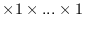, where deCount is the number of DEs in a default DELayout, equal to petCount. This means that the default decomposition will be into as many DEs as there are PETs, with 1 DE per PET.
The arguments are:
INTERFACE:
int ESMC_DistGridDestroy( ESMC_DistGrid *distgrid // inout );RETURN VALUE:
Return code; equals ESMF_SUCCESS if there are no errors.DESCRIPTION:
Destroy an ESMC_DistGrid object.
The arguments are:
INTERFACE:
int ESMC_DistGridPrint( ESMC_DistGrid distgrid // in );RETURN VALUE:
Return code; equals ESMF_SUCCESS if there are no errors.DESCRIPTION:
Print internal information of the specified ESMC_DistGrid object.
The arguments are:
The ESMF RouteHandle class provides a unified interface for all route-based communication methods across the Field, FieldBundle, Array, and ArrayBundle classes. All route-based communication methods implement a pre-computation step, returning a RouteHandle, an execution step, and a release step. Typically the pre-computation, or Store() step will be a lot more expensive (both in memory and time) than the execution step. The idea is that once precomputed, a RouteHandle will be executed many times over during a model run, making the execution time a very performance critical piece of code. In ESMF, Regridding, Redisting, and Haloing are implemented as route-based communication methods. The following sections discuss the RouteHandle concepts that apply uniformly to all route-based communication methods, across all of the above mentioned classes.
The user interacts with the RouteHandle class through the route-based communication methods of Field, FieldBundle, Array, and ArrayBundle. The usage of these methods are described in detail under their respective class documentation section. The following examples focus on the RouteHandle aspects common across classes and methods.
Internally all route-based communication calls are implemented as sparse matrix multiplications. The precompute step for all of the supported communication methods can be broken up into three steps:
INTERFACE:
ESMC_RouteHandle ESMC_RouteHandleCreateFromFile( char *filename, int *rc );RETURN VALUE:
ESMC_RouteHandleDESCRIPTION:
Create an ESMC_RouteHandle object.
The arguments are:
INTERFACE:
int ESMC_RouteHandlePrint( ESMC_RouteHandle rh // in );RETURN VALUE:
Return code; equals ESMF_SUCCESS if there are no errors.DESCRIPTION:
Print internal information of the specified ESMC_RouteHandle object.
The arguments are:
INTERFACE:
int ESMC_RouteHandleWrite( ESMC_RouteHandle rh, // in char *filename // in );RETURN VALUE:
Return code; equals ESMF_SUCCESS if there are no errors.DESCRIPTION:
Write ESMC_RouteHandle object to file to save regrid information for fast input for regridding operations during runtime.
The arguments are:
esmf_support@ucar.edu